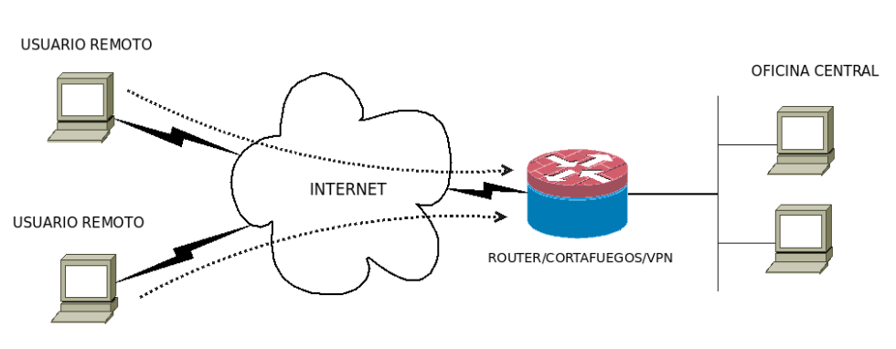
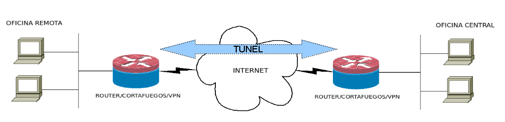

4. Redes Privadas Virtuales (VPN)¶
4.1. Concepto y tipos de VPN¶
Definición de VPN:¶
Una VPN (Virtual Private Network) es una tecnología que permite la creación de un canal de comunicación seguro y encriptado sobre una red pública o no confiable, como internet. Su objetivo principal en redes empresariales es garantizar la confidencialidad, integridad y autenticidad de los datos transmitidos entre dispositivos o redes distribuidas geográficamente.
Componentes clave de una VPN en redes empresariales:¶
- Protocolo de túnel: Encapsula los paquetes de datos en un nuevo paquete, permitiendo que viajen de forma segura por la red pública.
- Ejemplos: IPSec, L2TP, SSL/TLS.
- Cifrado: Asegura que los datos transmitidos no puedan ser leídos por terceros no autorizados.
- Algoritmos comunes: AES (Advanced Encryption Standard), 3DES, RSA.
- Autenticación: Verifica la identidad de los usuarios o dispositivos antes de permitir el acceso a la red.
- Métodos: Certificados digitales, autenticación basada en contraseñas o autenticación multifactor (MFA).
- Redireccionamiento de tráfico: Los paquetes transmitidos entre los puntos finales de la VPN (cliente-servidor o servidor-servidor) pasan a través de un túnel virtual, ocultando la información de la red interna.
- Conexiones remotas seguras: Permite que empleados o dispositivos externos accedan a la red interna de una empresa como si estuvieran físicamente presentes.
Tipos de VPN más utilizados:¶
- IPsec (Internet Protocol Security):
- Funciona en la capa de red (capa 3).
- Autenticación (AH) y cifrado (ESP).
- Utilizado para conexiones site-to-site o entre clientes y concentradores VPN.
- SSL/TLS VPN (Secure Sockets Layer):
- Usa TLS/SSL (capa de transporte).
- Más orientado a acceso remoto; a menudo accesible vía navegador web o cliente ligero.
- L2TP (Layer 2 Tunneling Protocol):
- Normalmente se combina con IPsec (L2TP/IPsec) para añadir cifrado
- Requiere configuración tanto en el servidor como en el cliente para encapsular la capa 2.
Ventajas de una VPN empresarial:¶
- Seguridad: Los datos sensibles están protegidos contra interceptaciones en redes públicas.
- Acceso remoto seguro: Mejora la productividad permitiendo que los empleados trabajen desde cualquier lugar.
- Ahorro de costes: Elimina la necesidad de conexiones dedicadas como circuitos MPLS.
- Escalabilidad: Fácil integración de nuevas ubicaciones o usuarios.
Inconvenientes de una VPN empresarial:¶
-
Coste de infraestructura y mantenimiento
1.1 Adquisición de hardware y software
1.2 Personal especializado (formación, soporte técnico) -
Complejidad de configuración
2.1 Configuraciones personalizadas según necesidades
2.2 Actualizaciones frecuentes (servidores, clientes) -
Rendimiento y latencia
3.1 Sobrecarga por cifrado y descifrado
3.2 Latencia por ubicación de servidores -
Dependencia de la conexión a Internet
4.1 Vulnerabilidad ante cortes o inestabilidad de la red pública
4.2 Calidad variable de la banda ancha según localización -
Riesgos de seguridad por errores de configuración
5.1 Puertas traseras o configuraciones inseguras
5.2 Gestión deficiente de contraseñas y certificados -
Escalabilidad limitada o costosa
6.1 Necesidad de licencias y equipos adicionales
6.2 Reconfiguración compleja al aumentar el número de usuarios -
Incompatibilidades con otros servicios
7.1 Bloqueos en redes corporativas (puertos y protocolos)
7.2 Sistemas heredados que no soportan nuevos protocolos de cifrado
4.2. Configuraciones típicas¶
- Acceso remoto (dialup)
- Empleado que se conecta desde su hogar u otra ubicación externa a la red corporativa.
- Se configura un cliente VPN (p.ej., OpenVPN Client) con las credenciales y parámetros de cifrado.
- Se habilita la conexión a recursos internos (servidores de archivos, aplicaciones empresariales).

- Site-to-site
- Conexión de dos o más sedes de una empresa a través de túneles VPN permanentes.
- Cada sede implementa un router/firewall con IPsec VPN, permitiendo que las subredes se vean como si estuvieran en la misma LAN.

- VPN basada en la nube:
- Utiliza proveedores de servicios VPN para establecer conexiones seguras entre la infraestructura empresarial local y los servicios en la nube.
4.3. Retos y soluciones prácticas¶
- Rendimiento y cifrado:
- Cuanto mayor sea la fuerza del cifrado (p.ej., AES-256), más carga computacional.
- Posible solución: equilibrar rendimiento y seguridad según las necesidades.
- Split tunneling vs. full tunneling:
- Split tunneling: solo el tráfico hacia la LAN corporativa viaja por la VPN, el resto usa la puerta de enlace local del usuario.
- Full tunneling: todo el tráfico del usuario pasa por la VPN. Mayor seguridad, pero posible mayor latencia.
- Fugas de DNS:
- Asegurarse de que las consultas DNS también van cifradas a través de la VPN y no por la conexión local.
- Configuración de servidores DNS internos o seguros.
- Autenticación multifactor (MFA):
- Uso de tokens físicos/virtuales, apps de autenticación, etc. para reforzar la seguridad del acceso remoto.
4.4 ¿Por qué han proliferado las VPN basadas en TLS?¶
La proliferación de VPN basadas en TLS responde a la demanda de soluciones más simples de desplegar, menos problemáticas con NAT y accesibles en una amplia gama de entornos, sin que ello signifique que IPsec haya dejado de usarse; ambas tecnologías coexisten en la práctica, cada una con sus ventajas y desventajas específicas.
Tanto IPsec como SSL/TLS ofrecen soluciones sólidas para la creación de canales seguros, pero operan en capas distintas:
-
IPsec actúa a nivel de red: Protege todo el tráfico IP y suele ser ideal para enlaces entre redes (site-to-site). Ofrece una protección muy amplia, pero conlleva una mayor complejidad de implementación y posibles problemas con NAT o cortafuegos.
-
SSL/TLS actúa en capas superiores (transporte-aplicación): Es más sencillo de configurar en muchos casos y su tráfico (similar a HTTPS) atraviesa cortafuegos y NAT con menos fricción. Su popularidad ha crecido notablemente, al punto de que muchas organizaciones prefieren o complementan IPsec con SSL VPN por su simplicidad, portabilidad y compatibilidad con la mayoría de las redes y dispositivos.
Tradicionalmente, las VPN corporativas se han basado en IPsec gracias a su fortaleza a nivel de red y a que permite conectar distintas sedes o redes completas. Sin embargo, en los últimos años han proliferado las llamadas “SSL VPN” o “VPN basadas en TLS”, principalmente por las siguientes razones:
- Facilidad de configuración y despliegue
- Las VPN sobre TLS suelen funcionar en la capa de aplicación, por lo que pueden ejecutarse como procesos de usuario sin requerir configuraciones específicas a nivel de kernel o de router.
- Muchas de estas soluciones usan un cliente software relativamente fácil de instalar (p.ej., OpenVPN, que se ejecuta en Windows, Linux, Mac e incluso en dispositivos móviles).
- Compatibilidad con NAT y cortafuegos
- El tráfico TLS se reconoce generalmente como tráfico HTTPS, por lo que es sencillo atravesar cortafuegos y NAT (puerto 443).
- IPsec, en cambio, requiere métodos adicionales (NAT-T, protocolos ESP/AH) que a veces generan conflictos en redes con configuraciones de NAT o cortafuegos restrictivos.
- Menor complejidad administrativa
- Aunque la gestión de certificados también es recomendable en las VPN SSL/TLS, muchas implementaciones permiten un funcionamiento sencillo con credenciales o incluso archivos de configuración que incluyen claves precompartidas.
- IPsec, por su parte, a menudo exige configurar manualmente políticas, transform sets, perfiles de autenticación e instalaciones PKI algo más complejas.
- Mayor “portabilidad”
- En ciertos entornos, las soluciones basadas en TLS son más fáciles de usar desde dispositivos móviles o conexiones públicas, ya que el tráfico pasa desapercibido como tráfico HTTPS estándar.
- Esto reduce los problemas de bloqueo en redes corporativas o lugares como hoteles, aeropuertos o cafeterías.
- Uso generalizado del puerto 443
- Las comunicaciones VPN sobre TLS suelen usar el mismo puerto (443) que HTTPS, lo que hace que muchos cortafuegos no las bloqueen por defecto.
- IPsec a menudo usa puertos y protocolos adicionales (ESP – protocolo IP 50, IKE en UDP 500, NAT-T en UDP 4500…), más susceptibles de ser bloqueados si la red de la organización destino no los contempla.
- Evolución de los protocolos y adopción masiva
- TLS ha ido progresando (versión 1.3) para ofrecer cifrados más robustos y eficientes.
- Herramientas como OpenVPN, WireGuard (aunque en la práctica se basa en tecnología de capa de red similar a IPsec, su configuración es más sencilla y se considera “VPN de nueva generación”), o Cisco AnyConnect han acercado mucho la tecnología de las VPN a administradores con menor experiencia en configuraciones complejas de IPsec.
4.5 Software VPN de código abierto¶
A continuación, se presenta un resumen de las principales soluciones VPN de código abierto, junto con sus ventajas e inconvenientes desde la perspectiva empresarial y de gestión de usuarios/credenciales. Asimismo, se detallan brevemente las tecnologías que emplea cada una.
4.5.1. OpenVPN¶
Descripción general¶
OpenVPN es una de las soluciones más conocidas de VPN de código abierto. Utiliza principalmente el protocolo SSL/TLS y permite configurar túneles cifrados entre clientes y servidores.
Tecnologías utilizadas¶
- Protocolo principal: SSL/TLS (sobre UDP o TCP)
- Cifrado: Compatibilidad con diversos algoritmos (AES, Blowfish, entre otros)
- Autenticación: Certificados digitales (X.509), autenticación de usuario/contraseña o ambos
Ventajas¶
- Amplia adopción: Existe gran soporte de la comunidad y abundante documentación.
- Flexibilidad: Permite configuraciones muy personalizadas para adaptarse a distintos escenarios empresariales.
- Multi-plataforma: Compatible con la mayoría de sistemas operativos.
- Gestión de credenciales: Integra con certificados y múltiples sistemas de autenticación (LDAP, Active Directory, etc.).
Inconvenientes¶
- Complejidad de configuración: Puede requerir mayor tiempo de configuración inicial y conocimientos técnicos avanzados.
- Rendimiento: Al basarse en SSL/TLS y encripciones más pesadas (dependiendo de la configuración), puede ser menos veloz que otras soluciones más ligeras (p. ej., WireGuard).
- Uso intensivo de recursos: El cifrado TLS puede suponer un mayor consumo de CPU en escenarios de alto tráfico.
4.5.2. WireGuard¶
Descripción general¶
WireGuard es una solución relativamente nueva que busca ser más sencilla, rápida y segura que los clásicos VPN basados en IPsec o SSL/TLS. Ha ganado mucha popularidad debido a su rendimiento y facilidad de configuración.
Tecnologías utilizadas¶
- Protocolo principal: Basado en el stack de red de Linux (y disponible también para otros SO).
- Cifrado: Utiliza criptografía de última generación (ChaCha20, Poly1305, Curve25519).
- Autenticación: Basada en pares de claves públicas y privadas (no utiliza certificados X.509 por defecto).
Ventajas¶
- Alto rendimiento: Manejo de cifrado muy eficiente y menor sobrecarga en la CPU.
- Código más compacto: Facilita las auditorías de seguridad y reduce potenciales vulnerabilidades.
- Fácil configuración: Se centra en la sencillez, lo que facilita la implantación y el mantenimiento.
Inconvenientes¶
- Gestión de usuarios limitada: Por defecto, no integra un sistema de certificados o directorios (como Active Directory), lo que dificulta la administración de credenciales en entornos grandes.
- Menos madurez: Aunque su adopción crece rápidamente, es una solución más reciente con menos herramientas de gestión comparadas con OpenVPN.
- Rotación de claves: Al no trabajar nativamente con PKI, la rotación de claves públicas/privadas puede ser un reto en entornos de grandes dimensiones.
4.5.3. strongSwan (IPsec)¶
Descripción general¶
strongSwan es una implementación de IPsec y IKE (Internet Key Exchange) para Linux y otras plataformas. Permite establecer túneles seguros a nivel de red y es ampliamente utilizado en entornos corporativos.
Tecnologías utilizadas¶
- Protocolo principal: IPsec (capa 3) con IKEv1 / IKEv2
- Cifrado: AES, 3DES, ChaCha20, entre otros.
- Autenticación: Certificados X.509, PSK (pre-shared keys), EAP para autenticación de usuarios, etc.
Ventajas empresariales¶
- Estándar reconocido: IPsec es un estándar ampliamente utilizado en el sector empresarial y compatible con muchos dispositivos.
- Integración con PKI: Facilita la gestión de certificados digitales a través de una infraestructura de clave pública.
- Alto nivel de seguridad: Ofrece cifrados robustos y mecanismos de negociación de claves fiables.
Inconvenientes¶
- Complejidad: IPsec e IKE pueden resultar complejos de configurar y administrar, especialmente en entornos con NAT o cortafuegos estrictos.
- Menor flexibilidad: Comparado con soluciones basadas en SSL, IPsec puede requerir configuraciones adicionales en los cortafuegos y routers intermedios.
- Herramientas de usuario menos intuitivas: Frente a OpenVPN o WireGuard, a veces la interfaz de configuración es menos amigable.
4.5.4. SoftEther VPN¶
Descripción general¶
SoftEther es un proyecto que ofrece soporte multi-protocolo (incluyendo SSL-VPN, IPsec, L2TP, EtherIP y SSTP) y se caracteriza por su flexibilidad y facilidad de uso.
Tecnologías utilizadas¶
- Protocolo principal: SSL-VPN nativo, pero con posibilidad de usar IPsec, L2TP y otros.
- Cifrado: Compatible con cifrado AES y otros algoritmos.
- Autenticación: Soporta autenticación por usuario y contraseña, certificados X.509 y otros métodos según el protocolo elegido.
Ventajas empresariales¶
- Gran versatilidad: Permite crear distintos tipos de conexiones VPN (site-to-site, host-to-site, etc.) sin necesidad de múltiples herramientas.
- Facilidad de administración: Incluye una consola de gestión gráfica bastante intuitiva.
- Compatibilidad: Al admitir varios protocolos, se integra de forma relativamente sencilla con clientes o equipos existentes.
Inconvenientes¶
- Menos popular que OpenVPN/WireGuard: Aunque es estable, su adopción es menor, por lo que la comunidad y el soporte en foros son más reducidos.
- Mayor superficie de ataque: Soportar múltiples protocolos aumenta la complejidad y podría conllevar más riesgos de seguridad si no se configura de forma adecuada.
- Consumo de recursos: La versatilidad y capas de abstracción adicionales pueden impactar en el rendimiento en comparación con soluciones más ligeras.
Consideraciones finales para la elección de una VPN¶
Seleccionar la solución VPN adecuada dependerá de las prioridades de la empresa en términos de rendimiento, gestión de credenciales, nivel de seguridad, facilidad de uso y compatibilidad con la infraestructura existente.
- Manejo de credenciales y escalabilidad:
- Entornos con alta rotación de usuarios y necesidad de integración con directorios de usuarios (LDAP, Active Directory) pueden decantarse por OpenVPN o strongSwan por su capacidad de gestión con PKI y directorios corporativos.
- WireGuard es muy rápido y sencillo, pero requerirá configuraciones adicionales o herramientas externas para la gestión centralizada de usuarios y claves.
- Rendimiento y simplicidad:
- WireGuard destaca en entornos donde se requiera alto rendimiento y una configuración mínima.
- OpenVPN ofrece una opción más madura con abundante documentación, pero con un consumo de recursos mayor.
- Compatibilidad y versatilidad:
- SoftEther se puede utilizar cuando se necesitan múltiples protocolos y una interfaz de administración más amigable.
- strongSwan se integra muy bien con dispositivos y estándares basados en IPsec, fundamental para comunicaciones entre sedes y equipos de diferentes fabricantes.
4.6 Uso de VPNs en el ámbito doméstico¶
El uso de VPNs en el ámbito privado ha ganado popularidad en los últimos años debido a la creciente preocupación por la privacidad en línea, la seguridad de los datos personales y el acceso a contenido restringido geográficamente. A continuación, se describen las principales aplicaciones y beneficios para usuarios caseros:
Una VPN permite establecer una conexión segura y privada entre tu dispositivo e internet, aunque estés utilizando una red pública o no segura;
- Túnel encriptado: Crea un "túnel" cifrado por el que viajan tus datos, protegiéndolos de posibles ataques o espionaje.
- Cambio de IP: Oculta tu dirección IP real y la reemplaza por la del servidor VPN, lo que mejora tu privacidad y puede simular que estás navegando desde otro lugar.
- Seguridad: Protege tus datos personales (como contraseñas, información bancaria, etc.) al evitar que puedan ser interceptados.
4.6.1 ¿Para qué se utiliza una VPN un usuario doméstico?¶
1. Privacidad y anonimato en línea¶
- Qué hace: Oculta la dirección IP real del usuario, sustituyéndola por la del servidor VPN. Esto dificulta que proveedores de servicios de internet (ISP), anunciantes o ciberdelincuentes rastreen su actividad en línea.
- Ejemplo: Navegar sin que los sitios web recopilen datos sobre la ubicación o las preferencias del usuario.
2. Seguridad en redes Wi-Fi públicas¶
- Qué hace: Protege la conexión del usuario mediante cifrado, evitando que los datos sean interceptados por atacantes en redes Wi-Fi públicas, como cafeterías, aeropuertos o hoteles.
- Ejemplo: Realizar transacciones bancarias o introducir contraseñas sin preocuparse por ataques de "hombre en el medio" (MITM).
3. Acceso a contenido restringido geográficamente¶
- Qué hace: Permite al usuario simular que su conexión proviene de otro país, lo que facilita acceder a servicios o plataformas bloqueados en su región.
- Ejemplo: Ver contenido en plataformas de streaming como Netflix, Disney+, o Hulu, disponible únicamente en ciertos países.
4. Descargas y compartición de archivos P2P¶
- Qué hace: Oculta la identidad del usuario al descargar o compartir archivos a través de redes P2P (como torrents), ayudando a proteger su privacidad y evitar posibles sanciones legales en regiones con regulaciones estrictas.
- Ejemplo: Descargar software o archivos multimedia de manera anónima.
5. Evitar la censura en internet¶
- Qué hace: Ayuda a sortear restricciones impuestas por gobiernos, empresas o instituciones que bloquean el acceso a ciertos sitios web o servicios.
- Ejemplo: Acceder a redes sociales, mensajería o páginas informativas bloqueadas en ciertos países.
4.6.2 Limitaciones y consideraciones:¶
El uso de servicios VPN gestionados por terceros implica un acto de confianza hacia el proveedor. Si bien las VPNs son herramientas útiles para proteger la privacidad y seguridad, no todas las VPN ofrecen el mismo nivel de protección. Es fundamental investigar a fondo el proveedor, entender sus políticas y, en caso de duda, considerar alternativas como configurar una VPN autogestionada en servidores propios.
1. Registro y explotación de datos personales¶
- Riesgo: Algunos proveedores de VPN registran información sobre las actividades en línea de sus usuarios, como direcciones IP, historial de navegación o marcas de tiempo.
- Consecuencia: Estos datos pueden ser vendidos a terceros, utilizados para marketing o entregados a autoridades en países con leyes de retención de datos.
- Ejemplo: VPNs gratuitas suelen financiarse mediante la venta de datos del usuario.
Mitigación:¶
- Elegir proveedores con políticas estrictas de "no logs" y revisadas por auditorías independientes.
2. Confiar en un proveedor desconocido¶
- Riesgo: Algunos servicios VPN operan desde países con regulaciones débiles o no transparentes, lo que dificulta saber si realmente cumplen con sus políticas de privacidad.
- Consecuencia: Podrían estar gestionados por entidades malintencionadas o con intereses ocultos.
- Ejemplo: Algunos servicios VPN gratuitos son financiados por empresas con intereses en recopilar datos masivos.
Mitigación:¶
- Investigar la reputación del proveedor y su ubicación (evitar países con leyes invasivas de vigilancia).
3. Cifrado débil o ausente¶
- Riesgo: Algunos servicios VPN utilizan protocolos obsoletos o configuraciones de cifrado débiles que no protegen adecuadamente los datos.
- Consecuencia: Los datos transmitidos podrían ser interceptados o descifrados por atacantes.
- Ejemplo: VPNs que aún emplean PPTP (Point-to-Point Tunneling Protocol), conocido por sus vulnerabilidades.
Mitigación:¶
- Optar por servicios que utilicen protocolos modernos y seguros como OpenVPN, WireGuard o IPSec/IKEv2.
4. Servidores mal protegidos¶
- Riesgo: Si el proveedor no protege adecuadamente sus servidores, podrían ser comprometidos por atacantes, lo que expondría la actividad y los datos del usuario.
- Consecuencia: Los datos cifrados podrían estar en riesgo si se almacenan claves de cifrado en el servidor comprometido.
- Ejemplo: Casos de proveedores que han sufrido brechas de seguridad en sus servidores.
Mitigación:¶
- Buscar proveedores que implementen medidas avanzadas de seguridad como servidores "sin disco" (RAM-only).
5. Reducción del anonimato¶
- Riesgo: Al utilizar un servicio VPN, se transfiere la confianza desde el proveedor de internet (ISP) al proveedor de la VPN. Si el proveedor de la VPN registra actividades, el anonimato puede estar comprometido.
- Consecuencia: Tu actividad puede ser rastreada directamente a través del proveedor VPN.
- Ejemplo: Algunos proveedores de VPN han sido obligados a entregar datos de sus usuarios bajo presión legal.
Mitigación:¶
- Usar VPNs con políticas claras contra registros y que estén ubicadas en jurisdicciones respetuosas con la privacidad (por ejemplo, fuera de alianzas como "Five Eyes").
6. Problemas de rendimiento¶
- Riesgo: Los servicios gratuitos o saturados pueden tener servidores lentos o poco fiables, lo que resulta en una experiencia de usuario deficiente.
- Consecuencia: Conexiones inestables, pérdida de velocidad y posibles interrupciones del servicio.
- Ejemplo: VPN gratuitas con límites de ancho de banda muy bajos.
Mitigación:¶
- Preferir servicios de pago con infraestructura robusta y suficientes servidores.
7. Malwares y anuncios invasivos¶
- Riesgo: Algunas aplicaciones VPN gratuitas instalan malware o software publicitario en los dispositivos de los usuarios.
- Consecuencia: Esto puede comprometer la seguridad del dispositivo y exponer datos sensibles.
- Ejemplo: VPNs gratuitas que muestran anuncios e instalan malware.
8. Uso indebido de la conexión del usuario¶
- Riesgo: Algunos servicios, especialmente gratuitos, pueden utilizar la conexión del usuario como nodo para sus operaciones, como en redes de tipo P2P.
- Consecuencia: Podrías ser responsable de actividades realizadas desde tu IP, como descargas ilegales.
- Ejemplo: Casos documentados de redes VPN que usan a los usuarios para compartir ancho de banda. Ej: Hola
Mitigación:¶
- Leer los términos y condiciones antes de usar un servicio VPN.